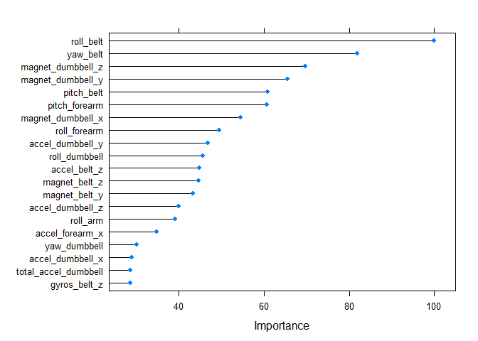

Practical Machine Learning Course Project
Fredrik Emilsson
Monday, March 16, 2015
Introduction
The goal of the project was to predict the manner in which they did the exercise. This is the "classe" variable in the training set. You may use any of the other variables to predict with. You should create a report describing how you built your model, how you used cross validation, what you think the expected out of sample error is, and why you made the choices you did.
The data
The two data frames are training and testing. Training are used to do the estimation. Training data frame contains 19622 observations on 160 variables and testing data frame contains 20 observations on 160 variables. Only the training data will be used. The testing data is only used for the submission.
Loading and preprocessing the data
Load the data:
testing <- read.table("./pml-testing.csv", sep = ",", header = TRUE)
training <- read.table("./pml-training.csv", sep = ",", header = TRUE)Except loading the data also a number of other steps has to be done before we can create a correct model. The following steps was done:
Remove columns that are not related to the data (1-7).
Remove columns that includes NA values.
Remove attributes that deals with skewness or kurtosis.
Remove near zero variance predictors.
# Remove columns that are not related to the data (1-7)
testing <- testing[,-c(1:7)]
training <- training[,-c(1:7)]
# Remove columns that includes NA values
na_columns <- colSums(is.na(training))
training = training[,na_columns == 0]
testing = testing[,na_columns == 0]
# Remove attributes that deals with skewness or kurtosis
training <- training[,!(names(training) %in% names(training)[grep("^skew",names(training))])]
training <- training[,!(names(training) %in% names(training)[grep("^kurt",names(training))])]
testing <- testing[,!(names(testing) %in% names(testing)[grep("^skew",names(testing))])]
testing <- testing[,!(names(testing) %in% names(testing)[grep("^kurt",names(testing))])]
# Remove near zero variance predictors
nzv <- nearZeroVar(training,saveMetrics=TRUE)
training <- training[,nzv$nzv==FALSE]
testing <- testing[,nzv$nzv==FALSE]
# Final included variables
names(training)## [1] "roll_belt" "pitch_belt" "yaw_belt"
## [4] "total_accel_belt" "gyros_belt_x" "gyros_belt_y"
## [7] "gyros_belt_z" "accel_belt_x" "accel_belt_y"
## [10] "accel_belt_z" "magnet_belt_x" "magnet_belt_y"
## [13] "magnet_belt_z" "roll_arm" "pitch_arm"
## [16] "yaw_arm" "total_accel_arm" "gyros_arm_x"
## [19] "gyros_arm_y" "gyros_arm_z" "accel_arm_x"
## [22] "accel_arm_y" "accel_arm_z" "magnet_arm_x"
## [25] "magnet_arm_y" "magnet_arm_z" "roll_dumbbell"
## [28] "pitch_dumbbell" "yaw_dumbbell" "total_accel_dumbbell"
## [31] "gyros_dumbbell_x" "gyros_dumbbell_y" "gyros_dumbbell_z"
## [34] "accel_dumbbell_x" "accel_dumbbell_y" "accel_dumbbell_z"
## [37] "magnet_dumbbell_x" "magnet_dumbbell_y" "magnet_dumbbell_z"
## [40] "roll_forearm" "pitch_forearm" "yaw_forearm"
## [43] "total_accel_forearm" "gyros_forearm_x" "gyros_forearm_y"
## [46] "gyros_forearm_z" "accel_forearm_x" "accel_forearm_y"
## [49] "accel_forearm_z" "magnet_forearm_x" "magnet_forearm_y"
## [52] "magnet_forearm_z" "classe"
Create the model
Now it is time to create a model.
First split up the test data in a training set (60%) and a test set (40%):
set.seed(125)
inTrain = createDataPartition(training$classe, p = 0.6)[[1]]
trainData = training[ inTrain,]
testData = training[-inTrain,]Now it is time to fit the model by using Caret. I decided to use random forest. It seems to be a good model for this type of data. I decided to set the cross validation to 5 k-folds (as we will see later I tested a number of k-folds and think 5 is a good trade-off value).
tc <- trainControl(method="cv", number=5)
modFit <- train(classe ~ .,data=trainData,method="rf",trControl=tc)## Loading required package: randomForest
## randomForest 4.6-10
## Type rfNews() to see new features/changes/bug fixes.
modFit## Random Forest
##
## 11776 samples
## 52 predictor
## 5 classes: 'A', 'B', 'C', 'D', 'E'
##
## No pre-processing
## Resampling: Cross-Validated (5 fold)
##
## Summary of sample sizes: 9421, 9421, 9421, 9420, 9421
##
## Resampling results across tuning parameters:
##
## mtry Accuracy Kappa Accuracy SD Kappa SD
## 2 0.9906593 0.9881826 0.002224373 0.002816493
## 27 0.9890458 0.9861414 0.002605490 0.003298396
## 52 0.9797043 0.9743263 0.003009641 0.003804880
##
## Accuracy was used to select the optimal model using the largest value.
## The final value used for the model was mtry = 2.
Which of the predictors was most important:
plot(varImp(modFit), top = 20)
Predict using the model
Now we want to validate it by use prediction on the test data to estimate the out of sample error.
pred <- predict(modFit,newdata=testData)
table(pred,testData$classe)##
## pred A B C D E
## A 2232 21 0 0 0
## B 0 1485 18 0 0
## C 0 12 1349 47 0
## D 0 0 1 1239 4
## E 0 0 0 0 1438
mean(pred!=testData$classe)## [1] 0.01312771
The out of sample error are 0.013, which I think is a good value.
I did a similar run for 2,5 and 10 and the out of sample errors are:
2: 0.0144
5: 0.0130
10: 0.0119
Final model
The final model is determined and the prediction is performed on the testing data. The same prediction will also be used to execute the 20 different test cases.
pred <- predict(modFit,newdata=testing)
pred## [1] B A B A A E D B A A B C B A E E A B B B
## Levels: A B C D E